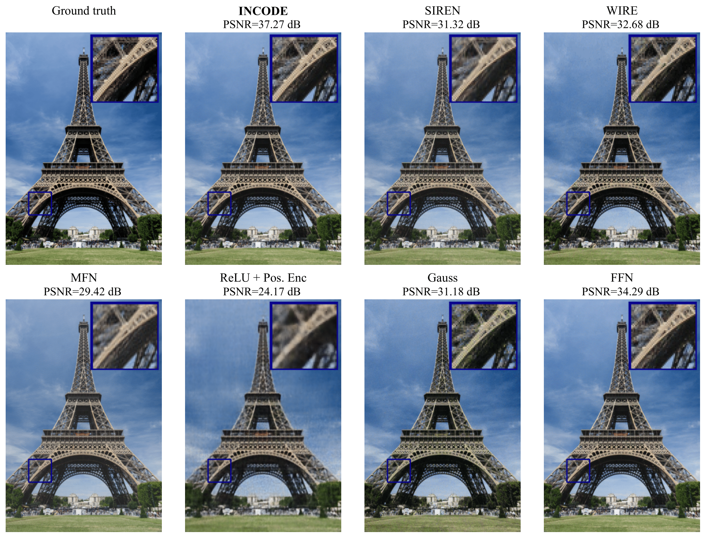
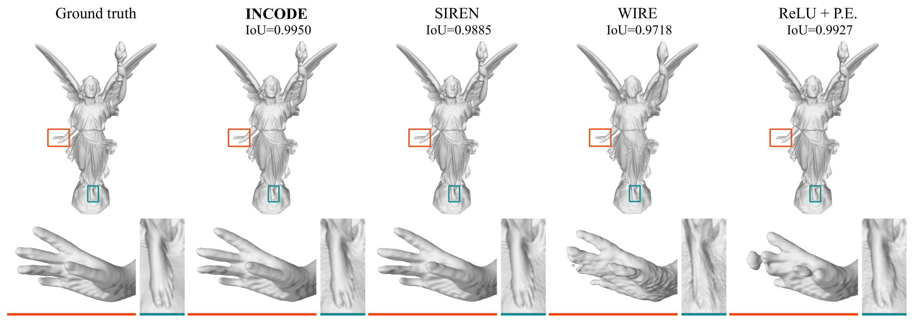
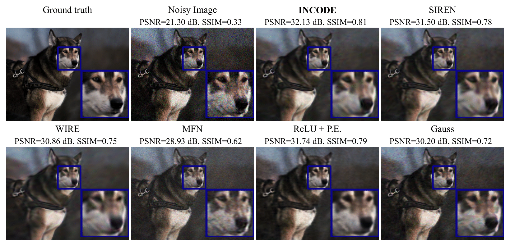
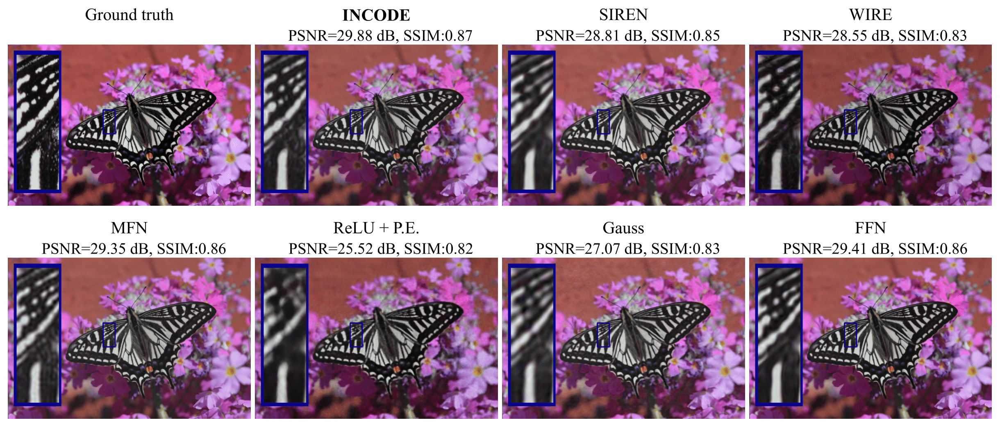
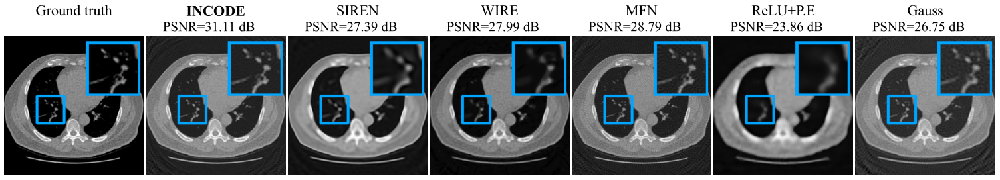
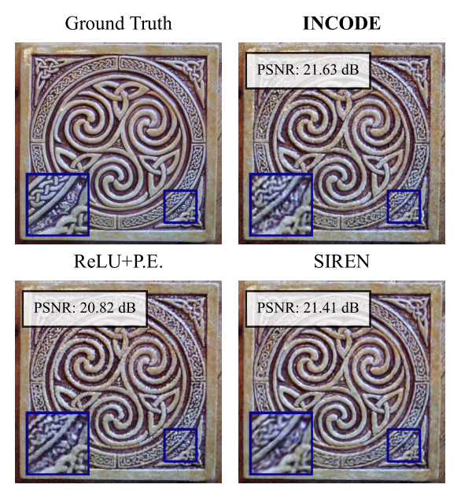

Abstract
Implicit Neural Representations (INRs) have revolutionized signal representation by leveraging neural networks to provide continuous and smooth representations of complex data. However, existing INRs face limitations in capturing fine-grained details, handling noise, and adapting to diverse signal types. To address these challenges, we introduce INCODE, a novel approach that enhances the control of the sinusoidal-based activation function in INRs using deep prior knowledge. INCODE comprises a harmonizer network and a composer network, where the harmonizer network dynamically adjusts key parameters of the activation function. Through a task-specific pre-trained model, INCODE adapts the task-specific parameters to optimize the representation process. Our approach not only excels in representation but also extends its prowess to tackle complex tasks such as audio, image, and 3D shape reconstructions, as well as intricate challenges such as neural radiance fields (NeRFs) and inverse problems, including denoising, super-resolution, inpainting, and CT reconstruction. Through comprehensive experiments, INCODE demonstrates its superiority in terms of robustness, accuracy, quality, and convergence rate, broadening the scope of signal representation.
Image Representations
INCODE excels in image representation, demonstrating significantly better representation quality compared to its counterparts. INCODE's Composer network maps 2D coordinates to RGB values, while the Harmonizer network excels in translating latent codes into activation parameters. In our study, INCODE demonstrates remarkable performance, consistently surpassing other methods by +2.98 dB compared to FFN and +4.59 dB compared to WIRE. It excels in capturing intricate image details, even in complex patterns, colors, and high-frequency information.
Audio Representations
INCODE surpasses state-of-the-art (SOTA) methods in audio signal representation, achieving a significant reduction in error rates and an impressive +10.60 dB increase in PSNR compared to the second-best method, Guass. It efficiently captures the periodicity of audio signals across various time scales, converging rapidly to a distortion-minimized representation. INCODE's exceptional ability to minimize background noise sets it apart from even SIREN, as evidenced by audio quality.
Shape Representations
INCODE proves to be a robust and advanced choice for shape representations in occupancy tasks. It effectively leverages latent code to enhance the composer network's representation capacity, intensifying both high and low-frequency information. This results in higher Intersection over Union (IOU) values, particularly excelling in replicating intricate object details and scene complexity, ultimately providing a more accurate representation compared to current methods.
INCODE demonstrates its effectiveness in image denoising, significantly improving image fidelity. We create the noisy image using realistic sensor measurement, incorporating readout and photon noise through independent Poisson random variables on each pixel. At τ=40 and ro=2, INCODE achieves a remarkable +10.83 dB PSNR increase and a 0.48 SSIM improvement compared to noisy images. It adeptly preserves image details while reducing noise artifacts, outperforming its competitors.
Experiments across different super-resolution levels (1x, 2x, 4x, and 6x) consistently show that INCODE outperforms alternative methods in terms of PSNR and SSIM values. INCODE excels in preserving sharper image details, setting it apart from other methods that often yield blurrier results. Here are the outcomes obtained from employing different techniques for achieving 4× single image super-resolution:
IN CT reconstruction, INCODE excels in handling the challenges of sparse data by integrating deep prior information. It produces sharp and detailed reconstructions with a significant improvement in PSNR compared to alternative methods, even in cases with limited measurements. INCODE's balance between image fidelity and noise reduction makes it a promising solution for underconstrained image reconstruction, maintaining its superiority over SOTA methods in the face of measurement noise.
In the context of single-image inpainting, INCODE effectively tackles inverse problems, even when only 20% of the pixels are sampled. The results demonstrate that INCODE can perform on par or even better than baseline methods, consistently producing sharper and more detailed inpainting outcomes.
Neural Radiance Fields (NeRFs) leverage INRs and volume rendering via MLPs with ReLU+P.E to represent scenes implicitly and synthesize novel views. In contrast, the study explores the effectiveness of using INCODE without positional encoding in NeRFs, revealing superior results achieved in fewer training epochs.
INCODE
SIREN
WIRE
Gauss
RELU+P.E.